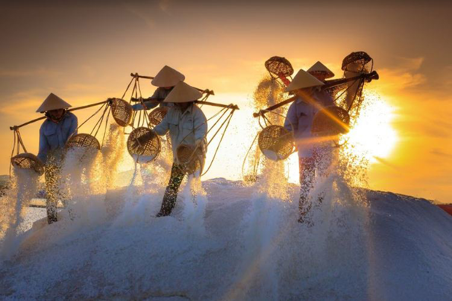

Không chất bảo quản và phụ gia
Khai thác từ thiên nhiên
Hương vị mặn mà và nồng nàn
 |
||
Bảo Tồn Truyền Thống Làm MuốiTheo Phó Chủ tịch Ủy ban Nhân dân tỉnh Bạc Liêu Lê Tấn Cận, chủ trương của tỉnh là phải giữ cho được nghề muối truyền thống. Điều đó đã được thể hiện bằng việc, phê duyệt Đề án nâng cao giá trị sản xuất và chế biến muối giai đoạn 2021-2030. Vì vậy, tỉnh xây dựng và phát triển ngành muối theo hướng hiệu quả, bền vững trên cơ sở tận dụng tối đa lợi thế của địa phương có truyền thống sản xuất muối để nâng cao năng suất, chất lượng và đa dạng hóa các loại sản phẩm về muối nhằm đáp ứng nhu cầu muối trong nước, hướng đến xuất khẩu muối và tạo việc làm, nâng cao thu nhập, ổn định đời sống của người dân làm muối. |
||